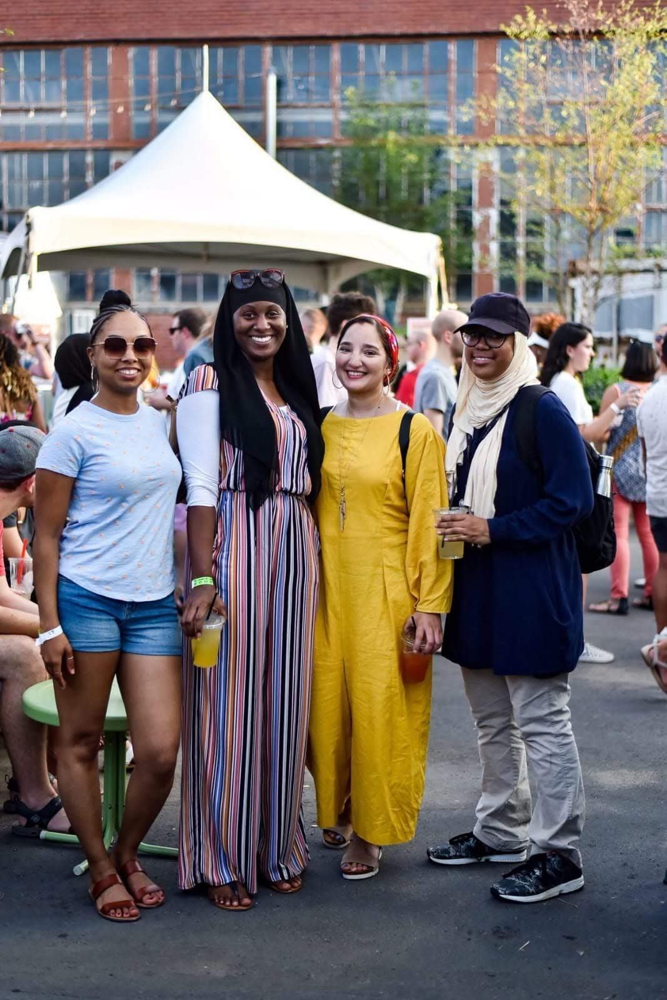

Me on the far right with the hat on, with friends at a festival.
My home town is ABQ, NM, but lived in three other states before coming to NC in 2016.
I am the youngest of 6 siblings.
Before coming to Charlotte, I took a big gap year after finishing my first college semester.
I am currently interning with a program called Year Up and will continue until the beginning of next year.
graduated high school in 2015 and took one semester at a community college in Kansas City. I have taken two short semesters at CPCC.
Windows is my primary computer platform.
Something to Remember Me By:
To de-stress I sew and watch anime.